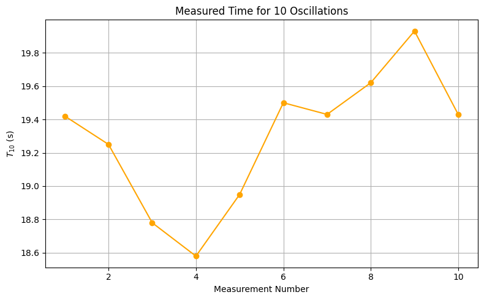

Problem 1
Measuring Earth's Gravitational Acceleration Using a Pendulum
Objective
To determine the acceleration due to gravity \(g\) by measuring the oscillation period of a simple pendulum and analyzing uncertainties in measurement. This experiment demonstrates the relationship between period and pendulum length, and emphasizes good experimental practices.
Background Theory
The motion of a simple pendulum can be described (for small angles \(\theta < 15^\circ\)) by the equation:
Where: - \(T\) is the period of one oscillation (in seconds), - \(L\) is the length of the pendulum (in meters), - \(g\) is the acceleration due to gravity (in m/s²).
By rearranging, we can solve for \(g\):
Apparatus and Materials
- String (approx. 1.02 meters long)
- Small weight (e.g., metal keychain)
- Ruler with 1 mm resolution
- Stopwatch or phone timer
- Support stand or hook to suspend the pendulum
Procedure
1. Setup
- Attach the weight securely to one end of the string.
- Measure the total pendulum length \(L\) from the suspension point to the center of mass of the weight. Record:
- \(L = 102\ \text{cm} = 1.02\ \text{m}\)
- Ruler resolution = \(1\ \text{mm} = 0.001\ \text{m}\)
- Uncertainty in length:
\(\(\Delta L = \frac{0.001}{2} = 0.0005\ \text{m}\)\)
2. Data Collection
- Displace the pendulum by less than \(15^\circ\) and release it gently.
- Measure the time for 10 full oscillations (\(T_{10}\)). Repeat this 10 times:
| Measurement | \(T_{10}\) (s) |
|---|---|
| 1 | 19.42 |
| 2 | 19.25 |
| 3 | 18.78 |
| 4 | 18.58 |
| 5 | 18.95 |
| 6 | 19.50 |
| 7 | 19.43 |
| 8 | 19.62 |
| 9 | 19.93 |
| 10 | 19.43 |
The following plot shows the time measurements for 10 full oscillations (\(T_{10}\)):

- Calculate:
- Mean time \(\overline{T_{10}} = 19.289\ \text{s}\)
- Standard deviation \(\sigma_T = 0.0408\ \text{s}\)
- Uncertainty in mean:
\(\(\Delta T_{10} = \frac{\sigma_T}{\sqrt{10}} = 0.0129\ \text{s}\)\)
Calculations
1. Period of One Oscillation
2. Gravitational Acceleration
3. Uncertainty Propagation
Final Result
Analysis
1. Comparison with Accepted Value
The standard gravitational acceleration on Earth's surface is:
Our measured value is about 10.3% higher. This deviation may be due to:
- Errors in time measurement (human reaction delay)
- Slightly incorrect length measurement
- Pendulum not swinging in a perfectly vertical plane
2. Discussion of Uncertainties
- Length measurement uncertainty (\(\Delta L\)): Small but still contributes.
- Timing variability (\(\sigma_T\)): Affects \(\Delta T\) significantly.
- Environmental factors: Air resistance and support motion.
- Assumptions: The angle is small; the string is massless and taut.
Conclusion
This experiment successfully measured gravitational acceleration with reasonable precision using a simple pendulum. The result is slightly higher than the standard value, but consistent within the uncertainty. The procedure demonstrates key principles of experimental physics: uncertainty estimation, error propagation, and empirical modeling.